Salas online
Crie sua sala ou entre em uma da lista. Escolha uma pista ou uma sequência de 3, com pódio no final. Bots completam as vagas.
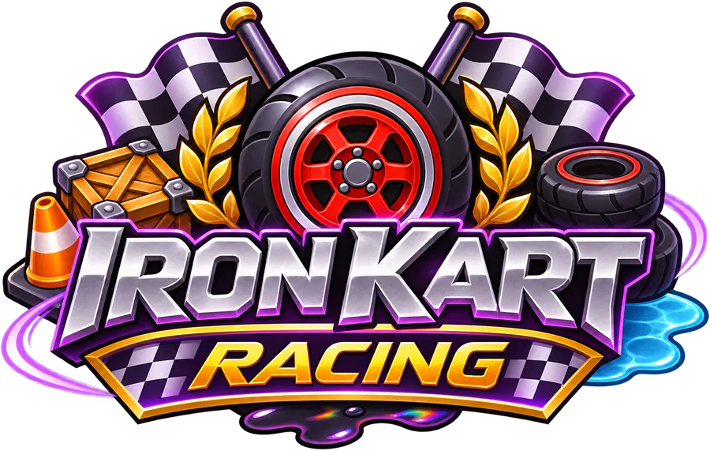
Pise fundo. Drift na curva. Turbo na saída.
Corrida de kart online para Android: até 8 pilotos na pista, 8 circuitos e um kart montado peça por peça do seu jeito.
A corrida
Entre nas zonas de drift, segure a derrapagem e carregue o turbo. Solte na hora certa e saia da curva voando.
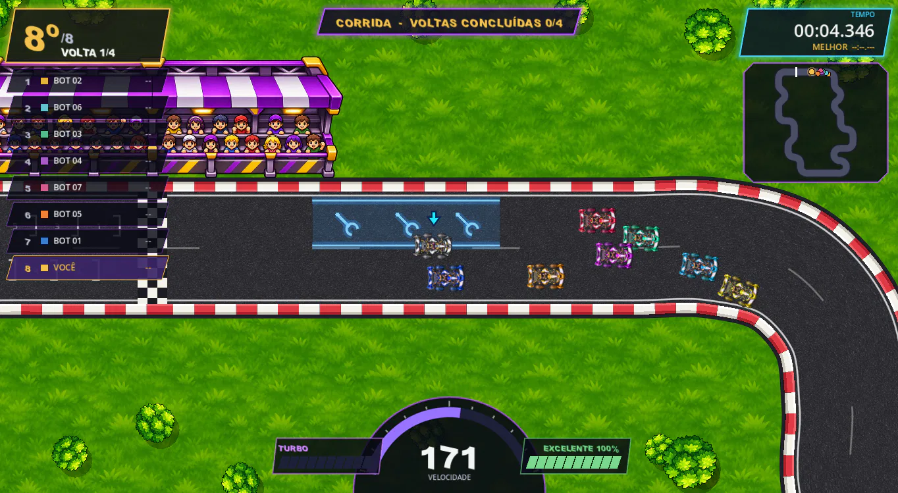
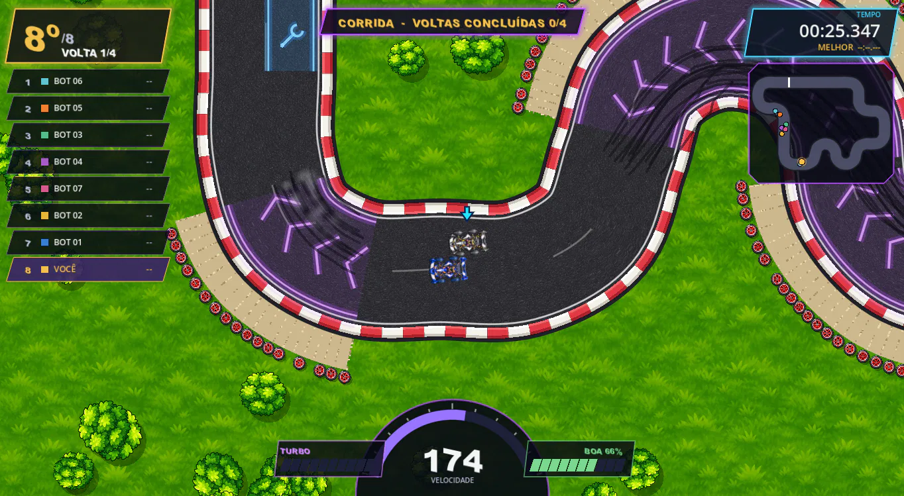
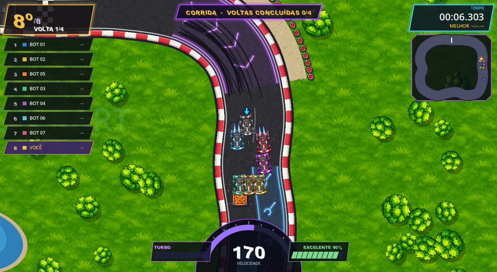
8 circuitos
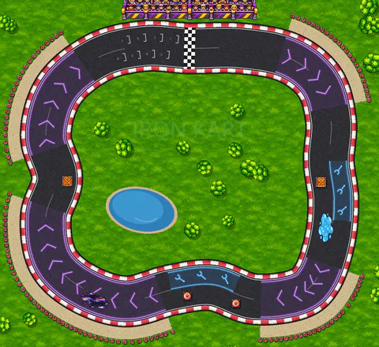
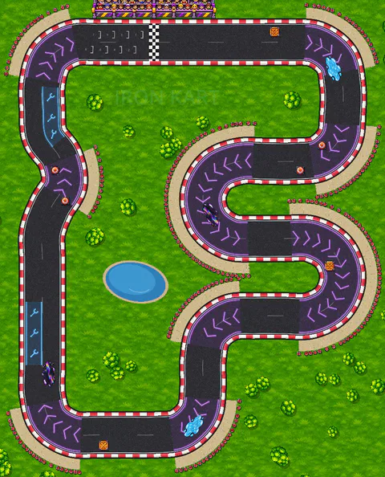
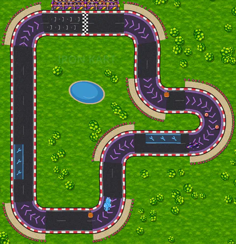
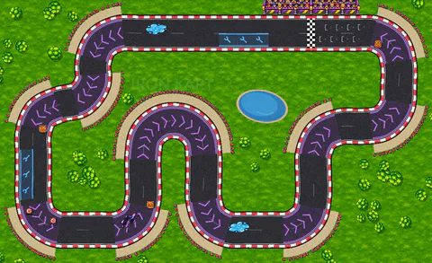
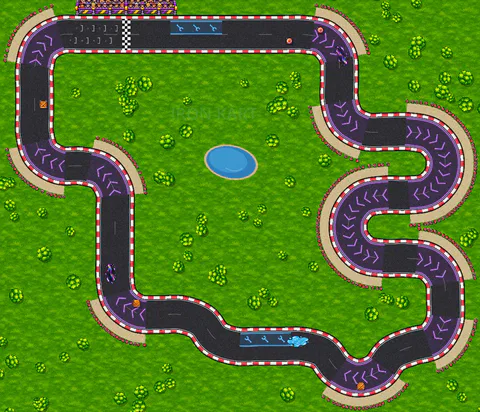
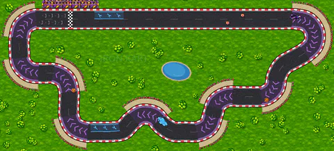
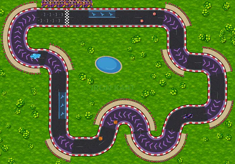
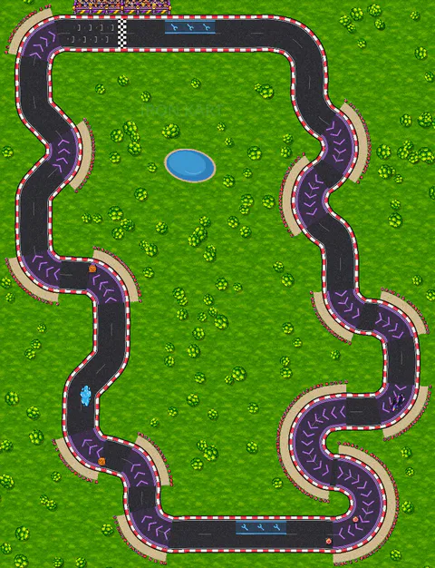
Garagem
Chassi, asa dianteira, asa traseira, pneus e capacete: cada peça muda o visual e dá bônus em velocidade, aceleração, estabilidade, drift ou dirigibilidade.
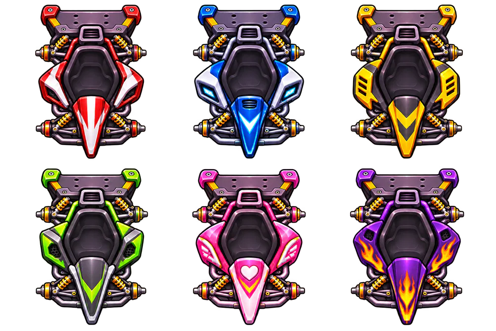
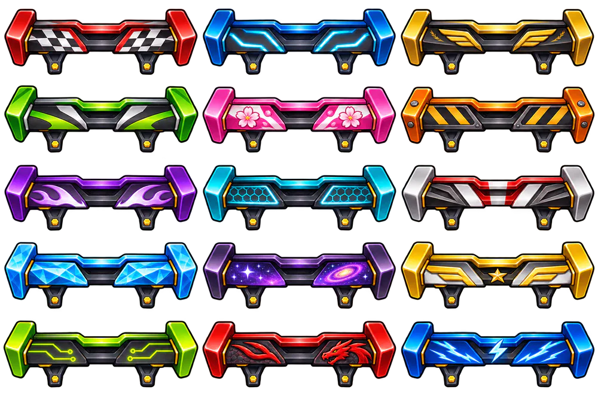
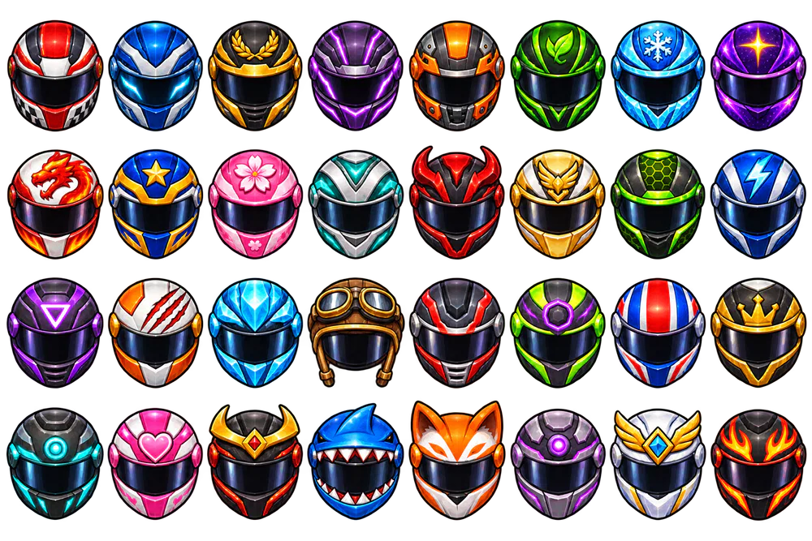
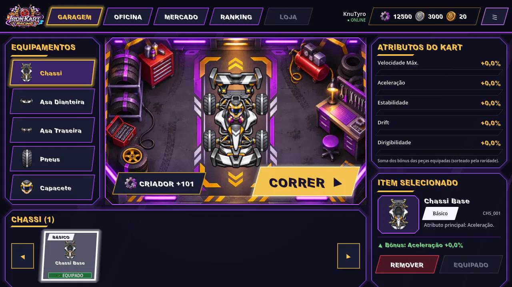
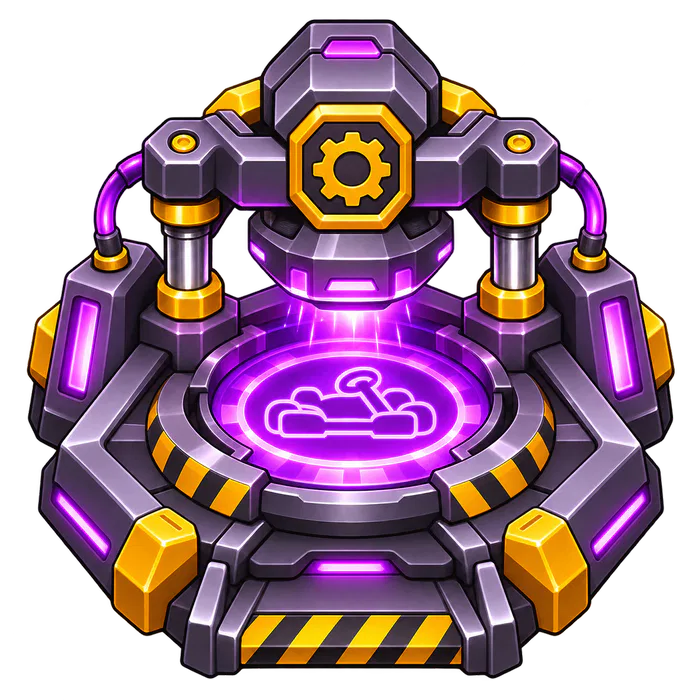
Oficina
Invista Sucata na bancada e veja a peça nova surgir. Quanto mais Sucata, maior a chance de sair coisa rara.
Online
Crie sua sala ou entre em uma da lista. Escolha uma pista ou uma sequência de 3, com pódio no final. Bots completam as vagas.
Tabelas semanal, mensal e da temporada: corridas, vitórias, pódios, pilotos vencidos e voltas mais rápidas. E o recorde de volta de cada pista.
Login Diário de 7 dias com uma peça surpresa no final e o Criador de Sucata, que produz até com o jogo fechado.
Só corrida online paga prêmio e conta no Ranking, e o resultado é conferido pelo servidor. Offline é treino livre.
Iron Kart Racing chega em breve à Google Play. Você entra com a mesma conta do Elemental Knights.
EM BREVE NA GOOGLE PLAY